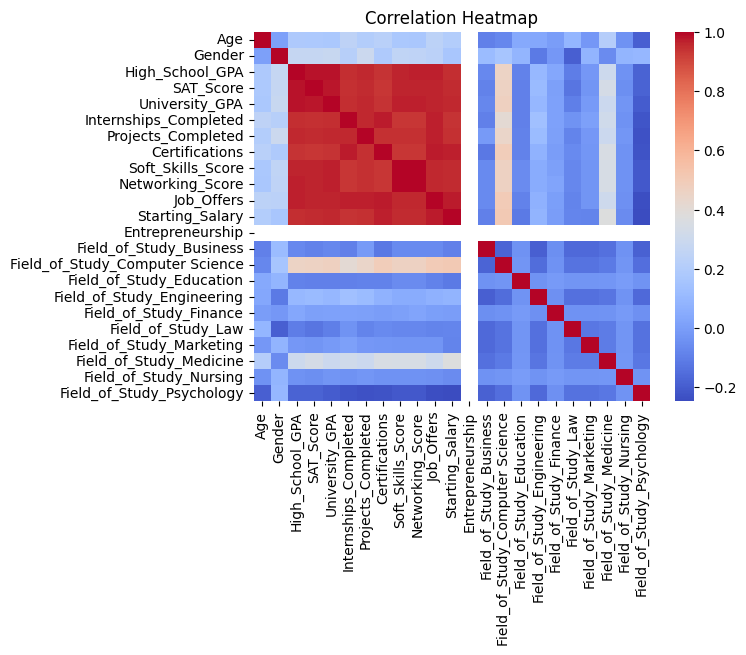
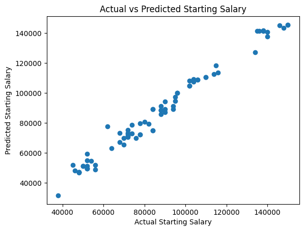

Case study · Data & Machine Learning
Starting Salary Prediction Using Machine Learning
Developed a machine learning model in Python to predict graduate starting salaries using academic performance, internships, certifications, networking ability, and field of study.
What I did
- Prepared and cleaned graduate outcome data
- Engineered features for predictive modeling
- Encoded categorical variables
- Scaled features for consistent model inputs
- Built and evaluated a salary prediction model
- Improved performance through iterative preprocessing
Tools & technologies
Analysis & visuals

Correlation Heatmap
Analyzed relationships between academic, professional, and networking factors to identify the strongest predictors of starting salary before model development.
sns.heatmap(df.corr(), cmap='coolwarm')

Actual vs. Predicted Salary
Compared actual and predicted salaries to assess model performance. Predicted values closely followed actual outcomes, indicating strong predictive capability.
plt.scatter(y_test, predictions)
Python in practice
Data Preparation Code
Feature engineering
df = pd.get_dummies(
df,
columns=['Field_of_Study'],
drop_first=True,
dtype=int
)Converted education majors into machine-learning-ready features using one-hot encoding while avoiding multicollinearity through drop_first=True.
Feature scaling
scaler = StandardScaler()
x_train = scaler.fit_transform(x_train)
x_test = scaler.transform(x_test)Standardized feature ranges across GPA, SAT scores, internships, certifications, and networking metrics to improve model performance. This contributed to reducing prediction error from 5.49% to 4.74%.
Key results
- Built and evaluated four iterations of a linear regression model
- Engineered features through categorical encoding and dummy variables
- Improved model error rate from 5.49% to 4.74%
- Achieved approximately 94% prediction accuracy
- Demonstrated that academic achievement, internships, networking, and field of study can effectively predict starting salary
The challenge
Building an accurate model required balancing simplicity and predictive performance. While the initial linear regression model performed well, additional experimentation was needed to determine which variables contributed meaningful predictive value. Feature selection, categorical encoding, and scaling were iteratively evaluated to improve accuracy while maintaining an interpretable model.
What I learned
This project demonstrated the importance of data preprocessing in machine learning workflows. Through iterative model development, I learned how categorical variables, feature engineering, and normalization techniques influence predictive performance. The experience reinforced the value of validating assumptions, measuring model error, and continuously refining models based on data-driven results.